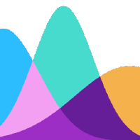

×
LinkedIn
👨🏻💻 GitHub

Celebi-PKG
Conmigo
📝 Screenwriting
📎 CV
☰
KAYA
ÇELEBI
DATA ANALYST @ MORGAN STANLEY
CTO @ CONMIGO
BASED IN NEW YORK CITY
PYTHON//R//JAVA//SQL//TABLEAU//POWERBI
REINFORCEMENT LEARNING//REGRESSION
DATA MINING//NATURAL LANGUAGE PROCESSING